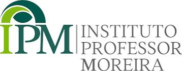
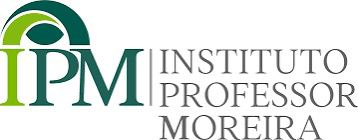

Workshops, Oficinas e mais esperam por você!
O COFAM será realizado na Associação Médica do Paraná (AMP), um dos locais mais prestigiados para eventos científicos em Curitiba, proporcionando uma ótima estrutura para vivenciar todas as experiências do congresso.
Durante o evento, os participantes terão a oportunidade de aproveitar diversos brindes, além de atividades exclusivas como um workshop de procedimentos cirúrgicos — uma chance incrível de aprender antes mesmo da residência. Também haverá uma oficina prática de fundo de olho com o Eyer 1 da Phelcom, tornando a oftalmologia ainda mais acessível e descomplicada.
Não perca essa oportunidade e garanta já a sua inscrição!
Inscreva-se já arrow_outward 
